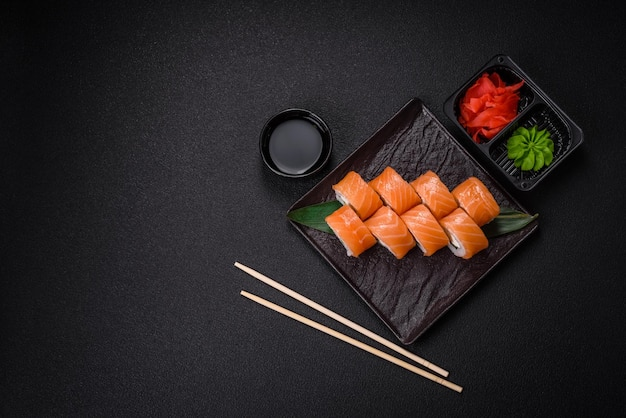

Суши и роллы — это одно из самых популярных блюд японской кухни, которое давно покорило гурманов по всему миру. Главный секрет идеального вкуса кроется в правильном сочетании слегка клейкого риса, заправленного рисовым уксусом, солью и сахаром, и свежайшей начинки.
Несмотря на то что приготовление суши кажется сложным искусством, сделать их дома гораздо проще, чем кажется на первый взгляд. Вам понадобятся лишь базовые ингредиенты: специальный круглозерный рис, листы сушеных водорослей нори, свежая рыба, авокадо или огурец, а также бамбуковый коврик для скручивания.